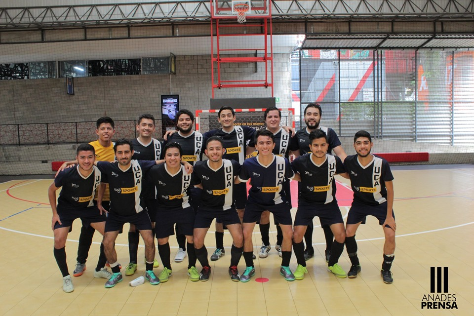

Primer Dia
Principio de semana disputando nuestro partido en cuartos de final con la selección de futsala de la UCA, en el cual ganamos 2-1 a la UTEC en el partido de ida en BeSport. Considerando que ellos llevaban mejor posicion en la tabla debiamos ganar en casa para afrontar el partido de vuelta con mas tranquilidad.